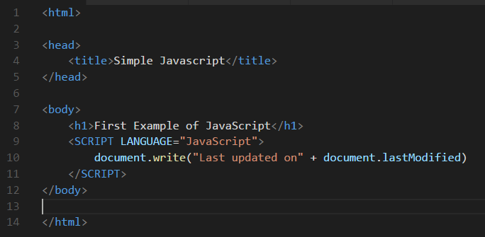
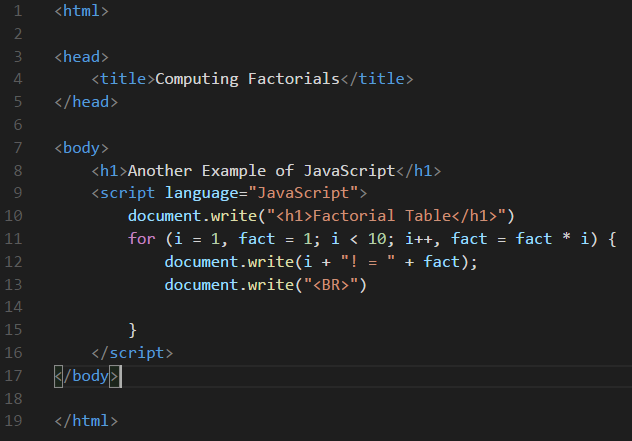
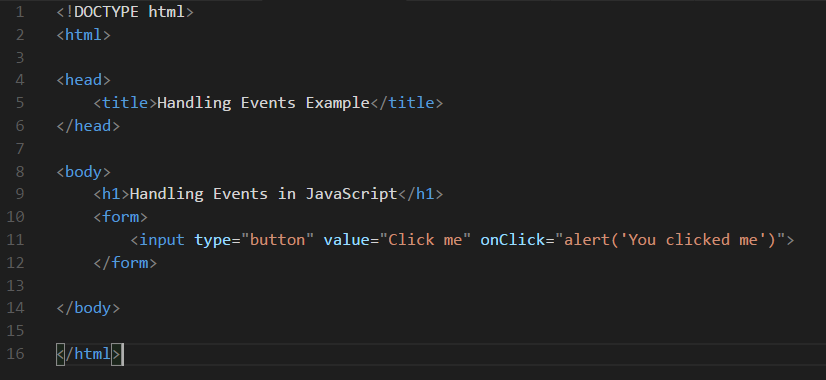
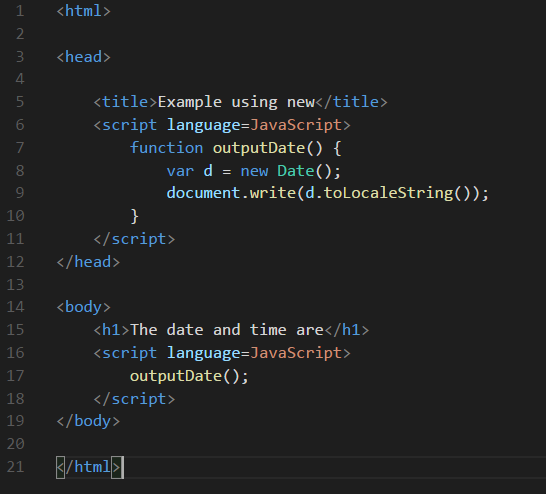
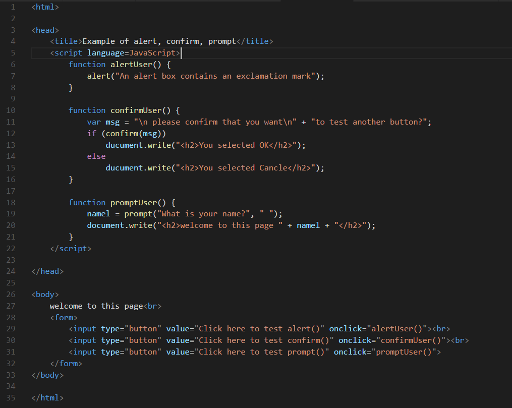
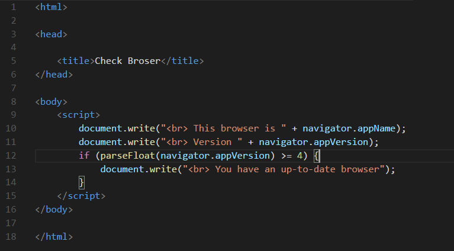
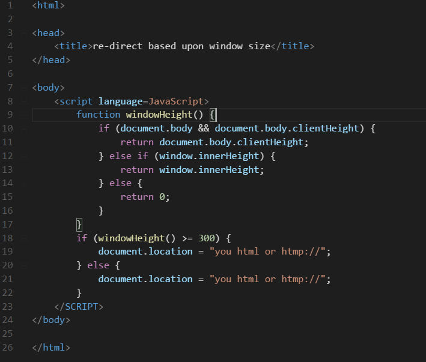
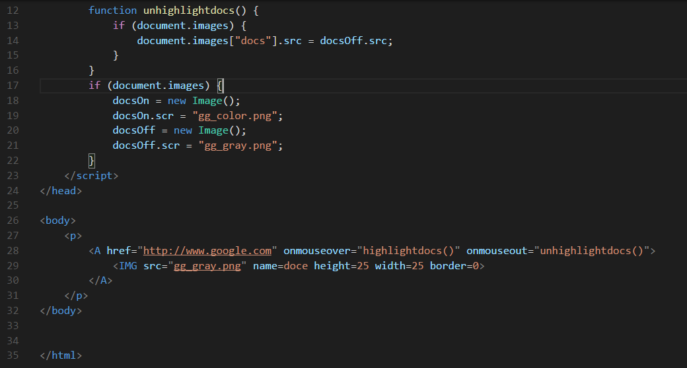
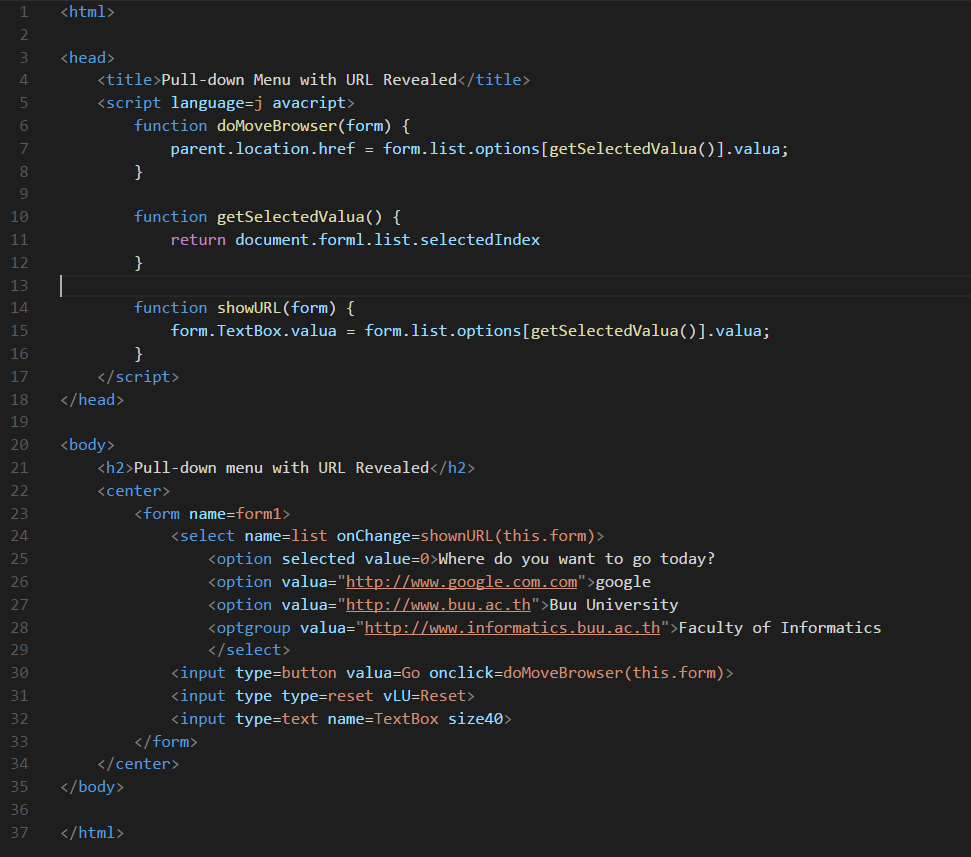
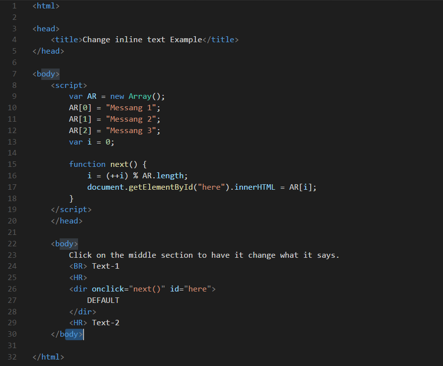

RECENT POSTS
การใช้งาน Grid ใน Bootstrap
Post by Jane Dane, Sep 27, 2015.
Food Ipsum
ปกติแล้ว grid system ที่ Bootstrap ให้มาจะเป็นแบบ 12 คอลัมน์ ซึ่งจะใช้ร่วมกับ container ที่เราเพิ่งสร้างขึ้นมานั่นเอง โดยแต่ละคอลัมน์จะมีความกว้างเท่ากันคือ 60px และจะอยู่ห่างกัน 20px จะได้ว่า (60*12) + (20*11) = 940 หรือความกว้างของ container
เรานั่นเอง การจะสร้าง layouts ด้วย Bootstrap ให้เราสร้าง html element ที่มี class “row” ขึ้นมาก่อน ทีนี้เราจะสามารถสร้างแต่ละคอลัมน์ขึ้นมาได้ด้วยการใส่ html element ที่มี class “span*” เข้าไปข้างใน โดย * ที่อยู่ข้างหลัง span นั้นจะเป็นตัวเลขที่จะระบุว่าเราต้องการให้คอลัมน์นี้
“กาง” แค่ไหน สมมติว่าเราจะสร้าง layouts แบบ 12 คอลัมน์ ให้เราใส่โค้ดด้านล่างนี้เข้าไปที่ container ของเรา
Js01.html

พิมพ์ข้อความ Last updated on ต่อด้วย วันที่ และเวลาอัตเดทไฟล์ล่าสุด
Js02.html

ปริ้น Factorial ตั้งแต่ เลข1-9
Js03.html

เป็นการสร้างปุ่ม ชื่อ Click me และเมื่อกดปุ่ม Click me จะเรียกฟังก์ชั่น alert ทำให้แสดงกล่องตอบโต้ มีข้อความแสดงว่า "You click me"
Js04.html

บรรทัด 6 : ประกาศฟังก์ชั่นชื่อ outputData()
บรรทัด 7 : ตัวแปร d เก็บค่าวันที่ และเวลา
บรรทัด 8 : พิมพ์ข้อความ d.toLocaleString() คือการเรียกวันที่ และเวลา ปัจจุบันของเครื่องคอมพิวเตอร์
บรรทัด 14 : เรียกใช้ฟังก์ชั่น
outputData() จะพิมพ์วันที่ และเวลาปัจจุบันของเครื่องคอมพิวเตอร์ออกมา
Js05.html

บรรทัด 6 : ประกาศฟังก์ชั่นชื่อ alertUser()
บรรทัด 7 : ฟังก์ชั่น alert เก็บข้อความ "An alert box contains an exclamation mark"
บรรทัด 10 : ประกาศฟังก์ชั่นชื่อ confirmUser()
บรรทัด 11 : ตัวแปร msg เก็บข้อความ "please confirm that you want" และ "to test another button?"
บรรทัด 12 : ตวรจสอบการกดปุ่มต่อตัวแปร msg
บรรทัด 13 : ถ้ากดปุ่ม Ok จะขึ้นหน้าใหม่แสดงข้อความ "You selected OK"
บรรทัด 15 : ถ้ากดปุ่ม Cancel จะขึ้นหน้าใหม่แสดงข้อความ "You selected Cancel"
บรรทัด 18 : ประกาศฟังก์ชั่นชื่อ promptUser()
บรรทัด 19 : ตัวแปร namel เก็บฟังก์ชั่น prompt เก็บข้อความ "What is your name?" และ " " ---> (ค่า String ว่าง)
บรรทัด 20 : พิมพ์ข้อความ "welcome to this page" ใน h2 และต่อด้วยตัวแปร namel
บรรทัด 27 : เป็นการสร้างปุ่ม ชื่อ Click here to test alert() และเมื่อกดปุ่ม Click here to test alert() จะเรียกฟังก์ชั่น alertUser() จะแสดงกล่องตอบโต้ มีข้อความแสดงว่า "An alert box contains an exclamation mark"
บรรทัด 28 : เป็นการสร้างปุ่มชื่อ Click here to test confirm() และเมื่อกดปุ่ม Click here to test confirm() จะเรียกฟังก์ชั่น confirmUser() จะแสดงกล่องตอบโต้ มีข้อความแสดงว่า "please confirm that you want" และ "to test another button?"
ถ้ากดปุ่ม Ok จะขึ้นหน้าใหม่แสดงข้อความ "You selected OK" ถ้ากดปุ่ม Cancel จะขึ้นหน้าใหม่แสดงข้อความ "You selected Cancel"
บรรทัด 29 : เป็นการสร้างปุ่ม ชื่อ Click here to test prompt() และเมื่อกดปุ่ม Click here to test prompt() จะเรียกฟังก์ชั่น promptUser() จะแสดงกล่องตอบโต้ มีข้อความแสดงว่า "What is your name?" และให้ใส่ชื่อลงไปช่องว่าง ถ้ากดปุ่ม
Ok จะขึ้นหน้าใหม่แสดงข้อความ "welcome to this page" ตามด้วยชื่อที่ใส่
Js06.html

บรรทัด 8 : ขึ้นบรรทัด และพิมพ์ข้อความ "This browser is" และ "Netscape" (ชื่อ Browser)
บรรทัด 9 : ขึ้นบรรทัด และพิมพ์ข้อความ "Version" และเรียกคำสั่ง navigator.appVersion (version ของ netscape)
บรรทัด 10 : parseFloat (การแปลงค่า string หรือตัวแปรให้เป็น Number) ตรวจสอบว่า navigator.appVersion มีค่ามากกว่าหรือเท่ากับ 4 หรือไม่
บรรทัด 11 : ถ้าเป็นจริง จะขึ้นบรรทัดใหม่ และพิมพ์ข้อความ "You have an up-to-date browser"
Js07.html

Js08.html

Js09.html

Js010.html
